Máquinas de Coser Zafra
Manual del panel
Cómo cambiar la web vosotros mismos: precios, productos, ofertas, fotos, horario, el blog y los textos de la tienda.
www.maquinasdecoserzafra.es/admin/ · Noviembre de 2026
El panel es la «trastienda» de la web: una página privada desde la que se cambia todo lo que se ve en la web, sin saber nada de informática. Lo que se cambia en el panel aparece en la web unos minutos después de publicarlo.
En el navegador (Chrome, Edge, Safari…) escribe www.maquinasdecoserzafra.es/admin/. Guárdala en favoritos para no tener que escribirla cada vez.
GitHub es el servicio donde se guarda la web. Se entra con tu usuario y contraseña de GitHub (te los da de alta Víctor la primera vez).
GitHub preguntará si autorizas al panel a usar tu cuenta. Pulsa el botón verde «Authorize» (Autorizar). Las siguientes veces ya no lo pregunta, y si no cierras la sesión entrarás directamente.
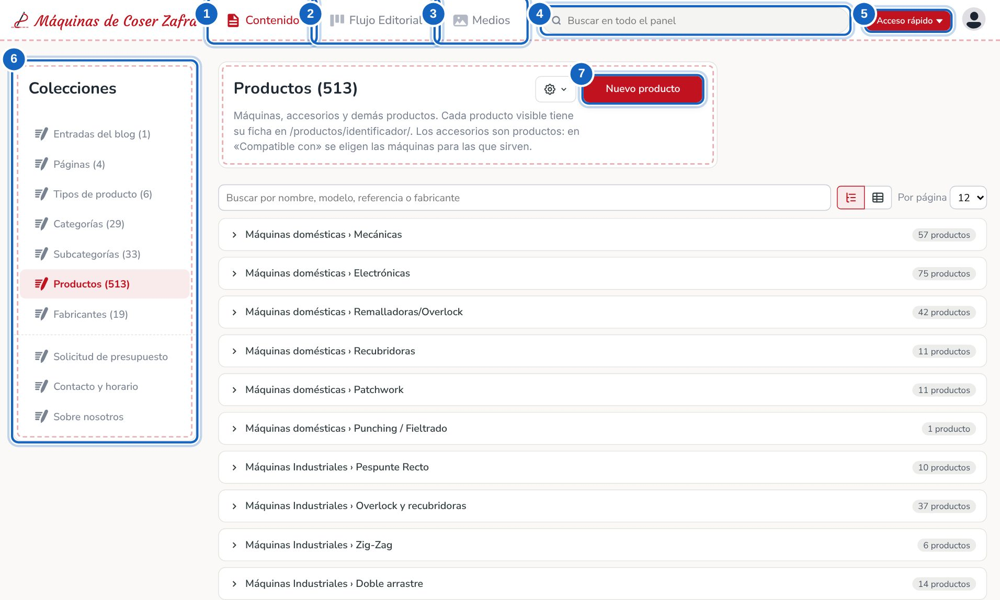
Las secciones Tipos de producto, Categorías y Subcategorías son el «árbol» del catálogo y de los menús. Normalmente no hace falta tocarlas; si quieres crear una categoría nueva, coméntalo con Víctor.
Es lo más importante del manual. Vale igual para un producto, el horario, el blog o cualquier otra cosa. Como ejemplo, cambiamos el precio de la Alfa 525.
Al cambiar algo, arriba aparece «CAMBIOS NO GUARDADOS» en rojo. Pulsa Guardar.
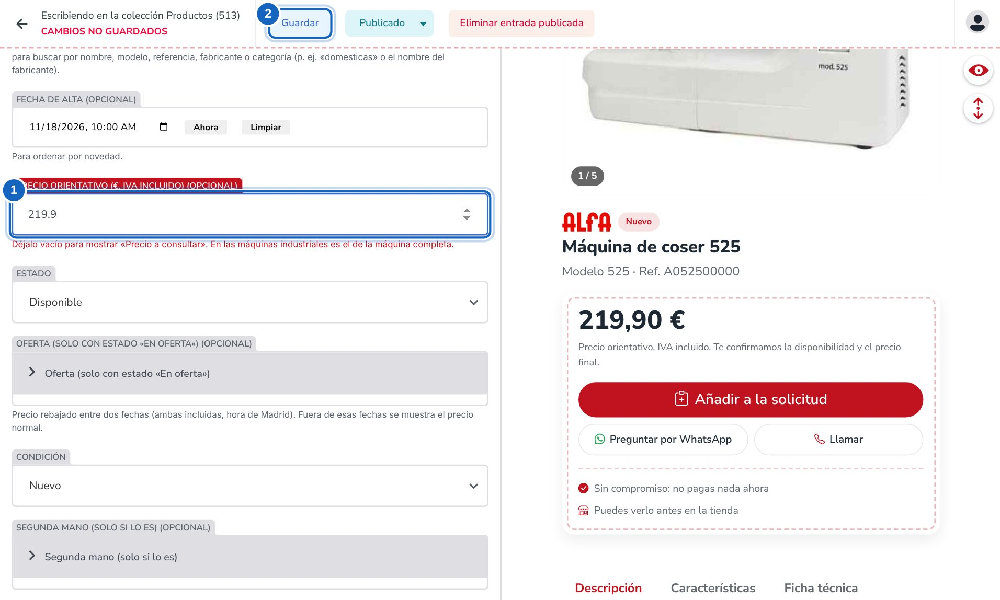
Ahora arriba sale «Estado: Borrador» y un botón azul «Publicar». El cambio está guardado como borrador: no se pierde, pero los clientes todavía no lo ven.
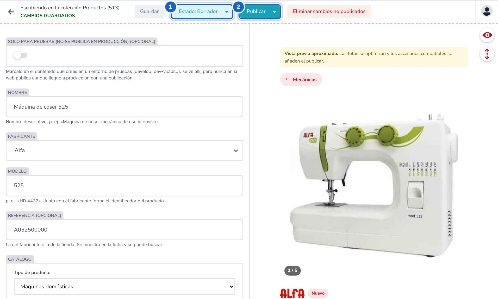
Pulsa Estado: Borrador y elige Listo. (En revisión sirve si quieres que otra persona lo mire antes; puedes saltártelo.)
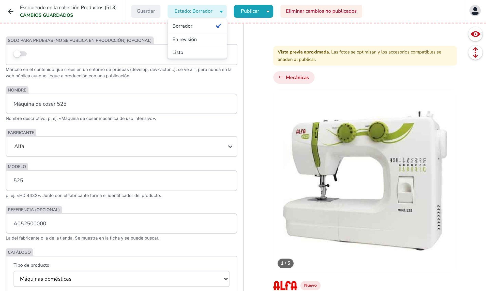
Con el estado en «Listo», pulsa Publicar y elige Publicar ahora.
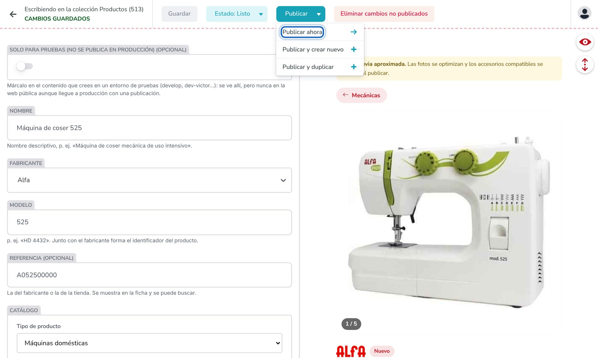
Arriba vuelve a salir «Publicado». La web tarda entre 5 y 10 minutos en actualizarse. Después, abre la web y comprueba el cambio (si no lo ves, recarga la página con la tecla F5).
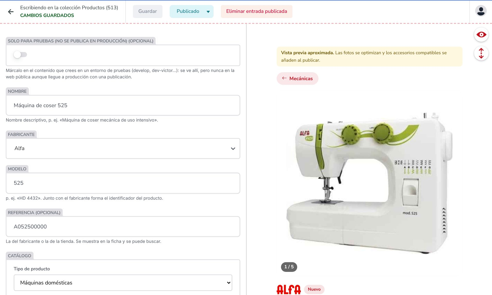
En Flujo Editorial (arriba) ves todos los cambios guardados que aún no se han publicado, en tres columnas. Pulsando uno, se abre para seguir con él o publicarlo.
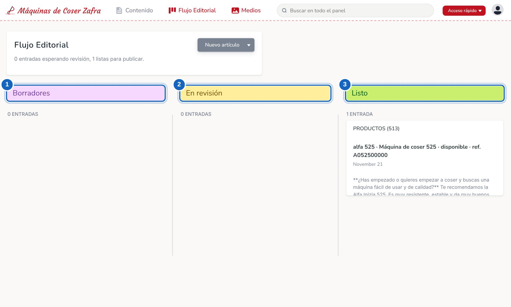
Los productos salen agrupados por tipo y categoría, cada grupo con su número de productos. Pulsando un grupo se despliega su tabla.
Escribe en «Buscar por nombre, modelo, referencia o fabricante». Solo quedan los grupos donde está.
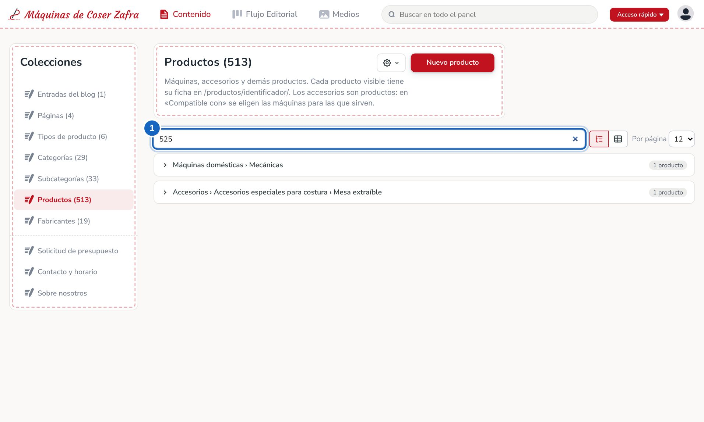
Despliega el grupo y pulsa la fila del producto. La tabla muestra fabricante, modelo, referencia, precio, estado y si tiene avisos (⚠: falta una foto, falta el precio, la oferta ha terminado…).
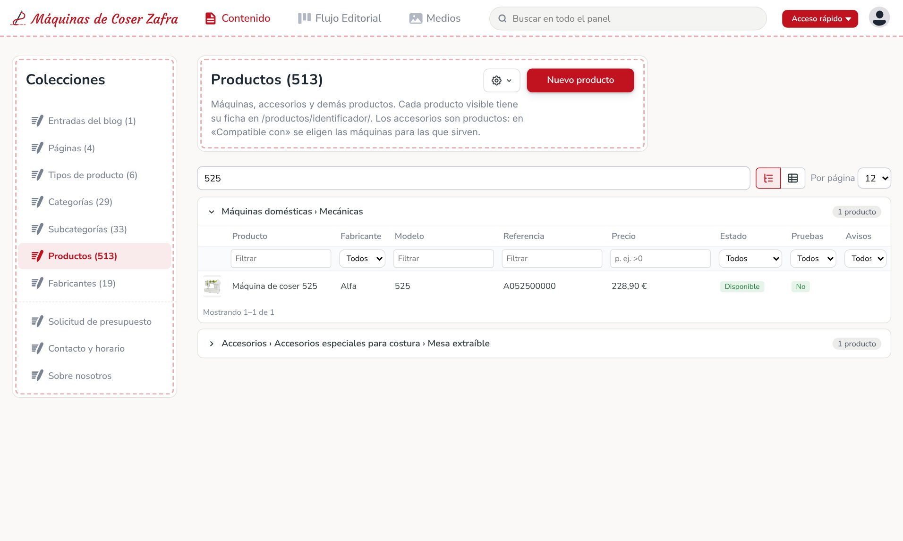
La ficha tiene dos partes: a la izquierda los datos que se cambian y a la derecha una vista previa de cómo quedará en la web.
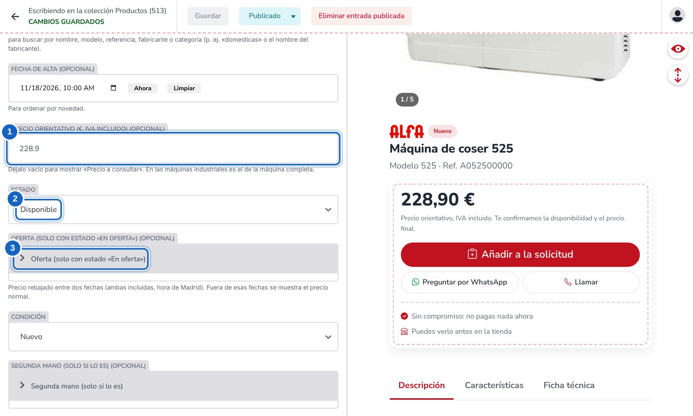
Después, Guardar → Listo → Publicar, como en el capítulo 3.
En la ficha del producto, en Estado, elige En oferta.
Pulsa «Oferta» para desplegarla y rellena el precio rebajado y las fechas.
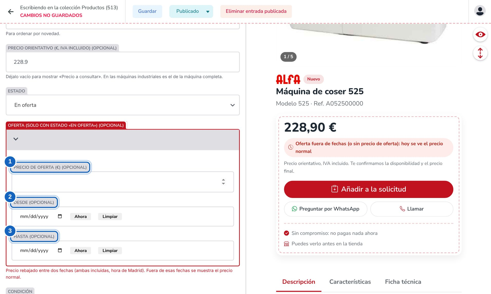
En la web saldrá el precio anterior tachado, el porcentaje de descuento y «Oferta hasta el …». Cuando pasa la fecha, la web vuelve sola al precio normal: no hace falta tocar nada. Para otra oferta, basta con cambiar el precio y las fechas.
En Estado, elige No disponible, y después Guardar → Listo → Publicar. El producto desaparece de la web, pero se queda en el panel con todos sus datos y fotos: si vuelve a entrar, basta con ponerlo otra vez en «Disponible».
En Condición, elige Segunda mano. Se despliega «Segunda mano», con el estado del producto (por ejemplo, «Muy buen estado, revisada en nuestro taller») y la garantía en meses, que tiene que ser de 12 meses o más. En la web saldrá la etiqueta «Segunda mano».
En Productos, el botón rojo de arriba. Se abre una ficha vacía.
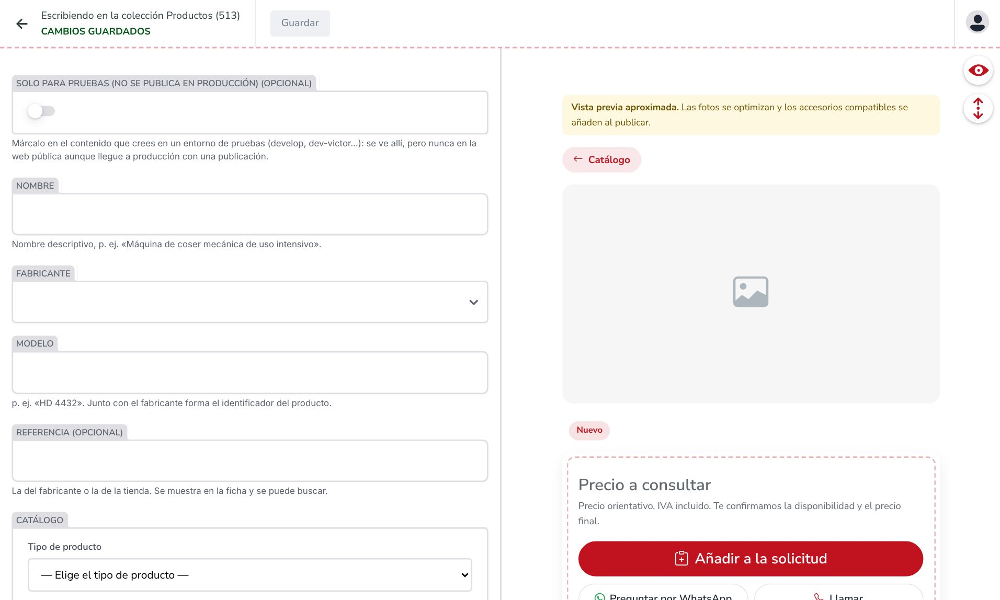
| Campo | Qué poner |
|---|---|
| Solo para pruebas | Déjalo sin marcar. Si se marca, el producto no sale en la web. |
| Nombre | Un nombre descriptivo: «Máquina de coser mecánica 525», «Remalladora 4 hilos…». |
| Fabricante | Se elige de la lista. Si no está, primero hay que darlo de alta en Fabricantes (capítulo 9). |
| Modelo | Obligatorio. El modelo del fabricante, por ejemplo «HD6605C». |
| Referencia | Opcional: la referencia del fabricante o de la tienda. |
| Catálogo | Tres desplegables: tipo de producto (obligatorio) y, si quieres, categoría y subcategoría. Cada uno solo muestra lo que cuelga del anterior. |
| Compatible con | Solo para accesorios: las máquinas para las que sirve (ver abajo). |
| Precio, Estado, Oferta, Condición | Como en los capítulos 4 y 5. |
| Fotos | De 1 a 5 (capítulo 7). La primera es la principal. |
| Resumen | 1 o 2 frases que salen bajo el nombre y en Google. Mejor que no pase de unos 155 caracteres (unas dos líneas). |
| Características (puntos clave) | Frases cortas con lo más importante: «23 puntadas», «Enhebrador automático»… Con el botón «Add» se añade otra. |
| Ficha técnica | La tabla de datos: a la izquierda el dato («Puntadas») y a la derecha el valor («15»). |
| Ficha técnica en PDF | Opcional: el folleto o manual del fabricante. |
| Descripción | El texto largo, con negritas y listas si quieres. |
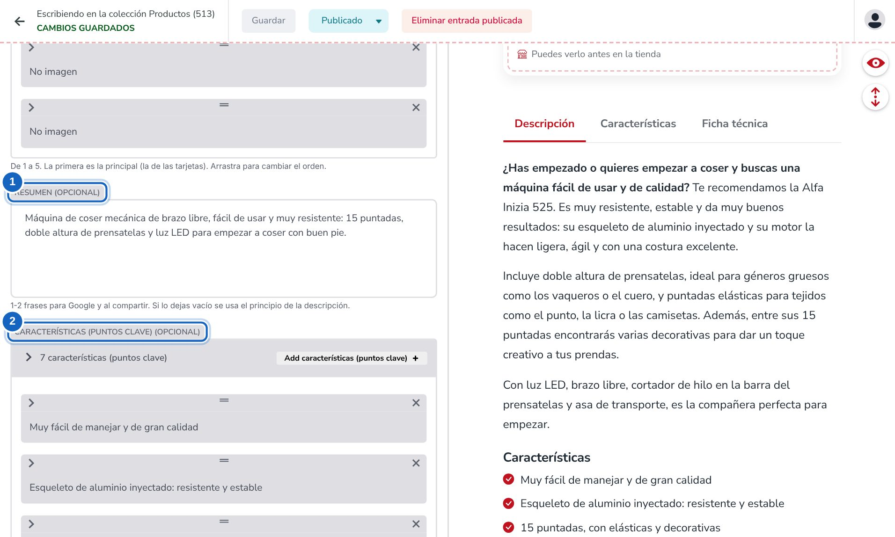
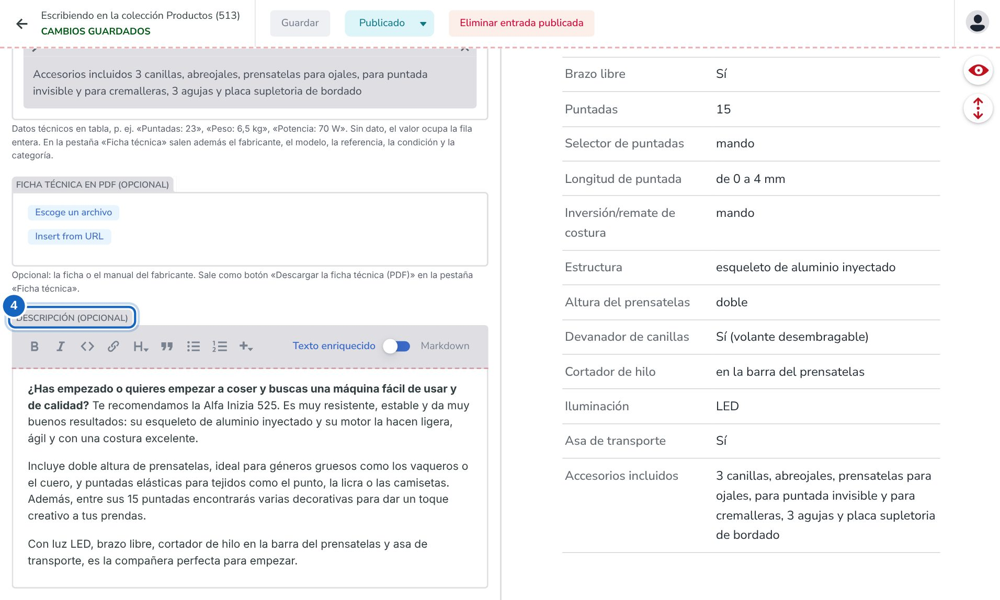
En un accesorio (una mesa, un prensatelas…), en Compatible con se escriben las máquinas para las que sirve y se eligen de la lista. El accesorio saldrá en la ficha de esas máquinas, en la pestaña «Accesorios», y en la ficha del accesorio saldrá «Modelos compatibles».
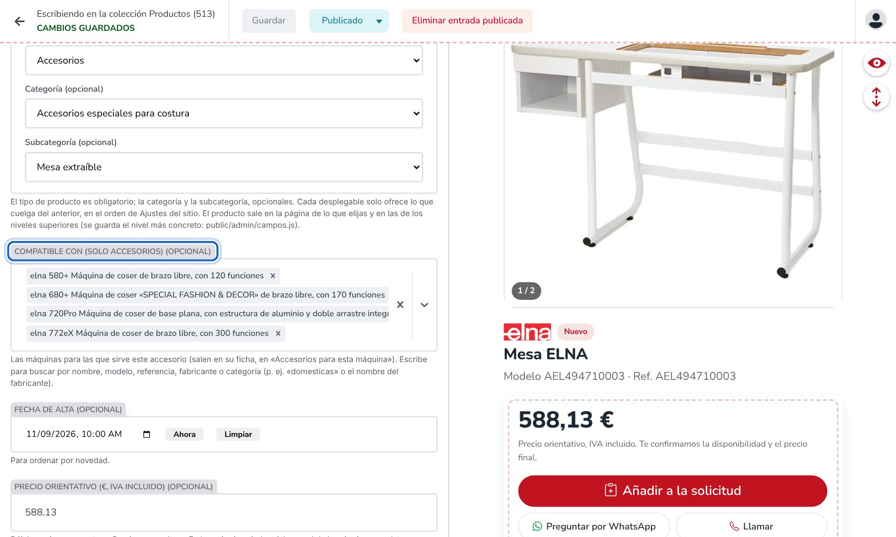
Guardar → Listo → Publicar (capítulo 3). En la lista, la columna ⚠ te avisa si se ha olvidado algo importante (foto, precio…).
Cada producto puede tener de 1 a 5 fotos. La primera es la que sale en las tarjetas y al compartir el producto.
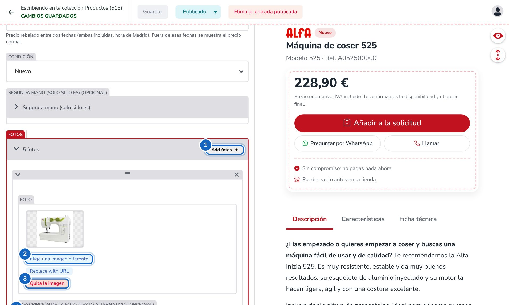
Con Medios (arriba) ves todas las fotos de la web por carpetas: General, Productos, Fabricantes… Cada foto indica si está «En uso» (y en qué ficha) o «Sin usar». Solo se pueden borrar las que no se usan.
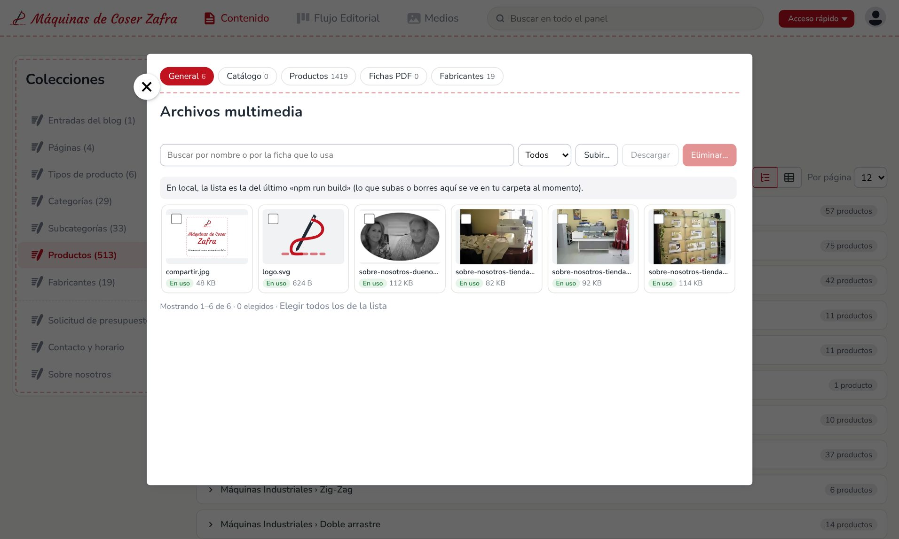
En Medios, la pestaña Manuales tiene este manual, el de la web y la guía de solicitudes. Pulsa uno y luego Abrir para leerlo o Descargar para guardarlo. No se pueden borrar ni cambiar desde ahí, y no se publican en la web.
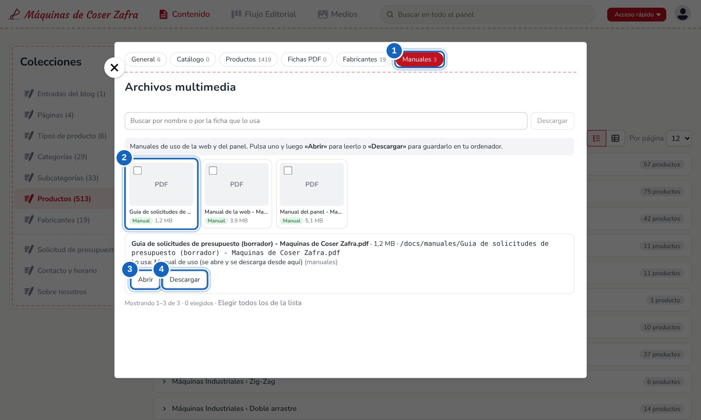
En Contacto y horario están los datos de la tienda. Se usan en la página de contacto, en el pie de todas las páginas, en los botones de WhatsApp y Llamar de las fichas, en los textos legales y en Google.
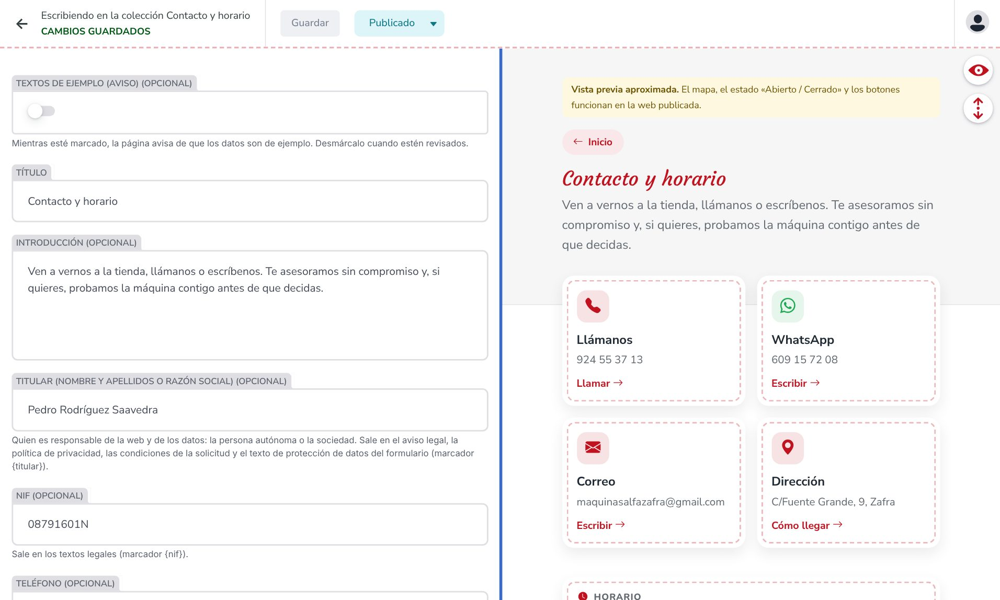
En Horario hay una fila por cada grupo de días con el mismo horario (ahora, «lunes a viernes» y «sábado y domingo»). Pulsa una fila para desplegarla: marcas los días y escribes la mañana y la tarde así: 10:00-13:30. Si se deja vacía, ese tramo sale «Cerrado».
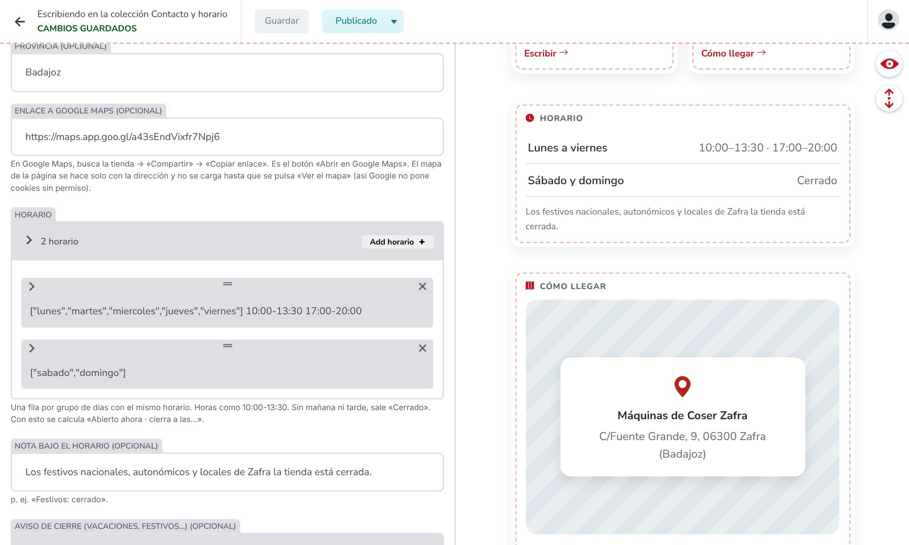
Con el horario, la web calcula sola si la tienda está «Abierta ahora» o «Cerrada · abre el…».
Para avisar de unas vacaciones, despliega Aviso de cierre y rellena el texto (por ejemplo, «Cerrado por vacaciones del 1 al 15 de agosto») y las fechas Desde y Hasta. Mientras dure, la web lo muestra y dice «Cerrado». Al terminar, desaparece solo.
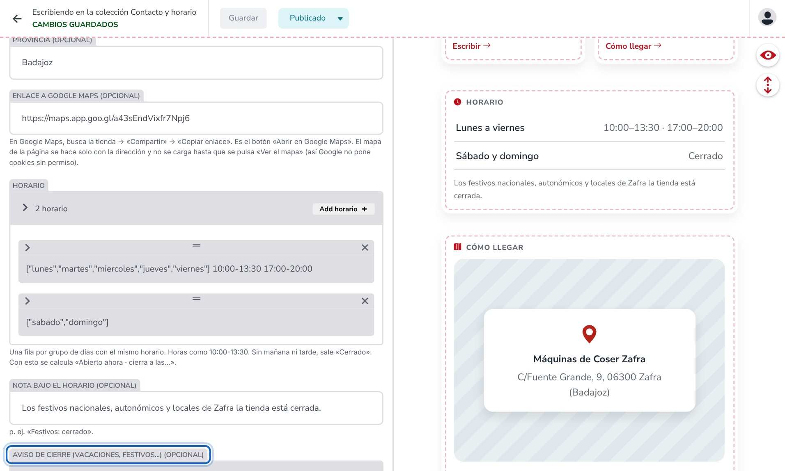
Aquí se cambian la presentación de la tienda, la foto, el año de apertura, las cifras, los servicios, «Por qué comprar con nosotros», la historia y las marcas. A la derecha se ve cómo queda.
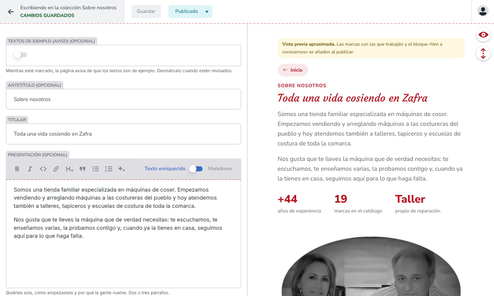
Cada fabricante tiene un nombre y su logotipo. Si vais a vender una marca nueva, primero se da de alta aquí con «Nuevo fabricante». La tabla muestra cuántos productos tiene cada uno.
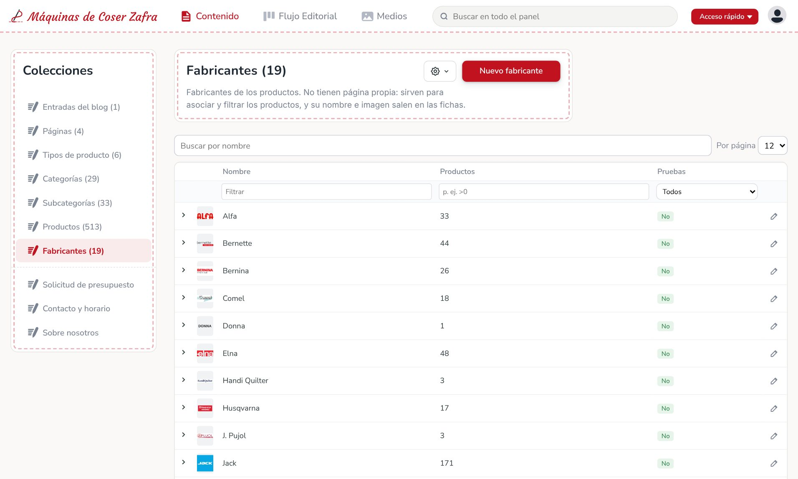
Título (en minúsculas normales, no TODO EN MAYÚSCULAS), fecha de publicación (botón «Ahora»), tema (una o dos palabras, como «Consejos»), resumen (1 o 2 frases), imagen destacada (mejor apaisada), el texto y, al final, el recuadro final con un botón al catálogo o a una categoría.
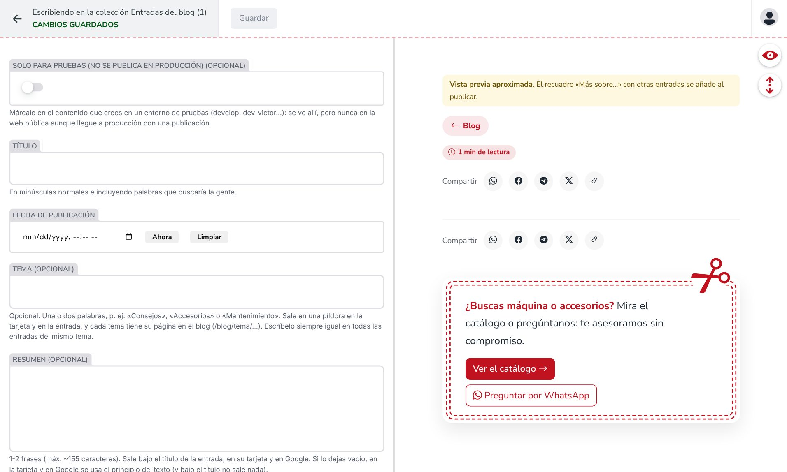
Aquí se configuran las solicitudes que envían los clientes desde la web. Cómo atenderlas se explica en la Guía de solicitudes de presupuesto.
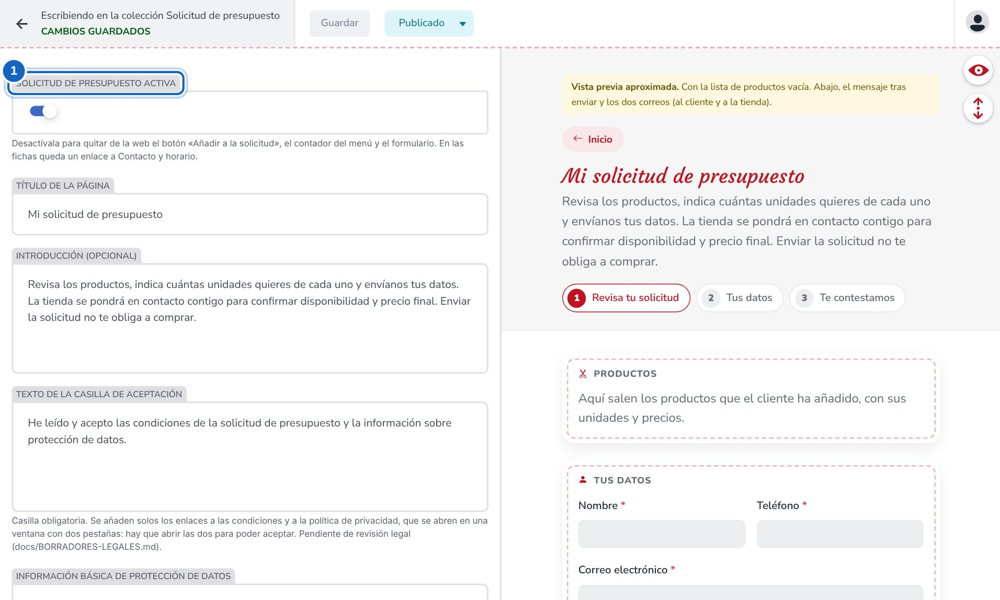
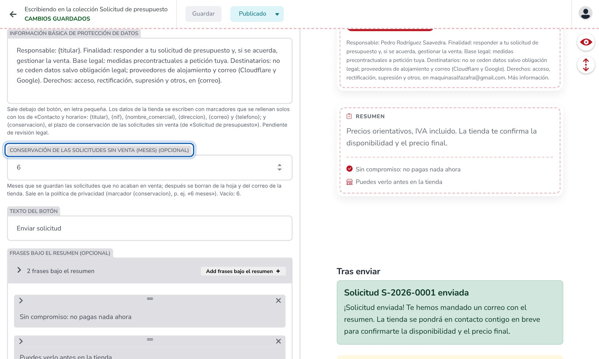
Sirve para revisar todos los productos con calma, imprimirlos o pasárselos a alguien.
En la lista de Productos, el botón del engranaje junto a «Nuevo producto».
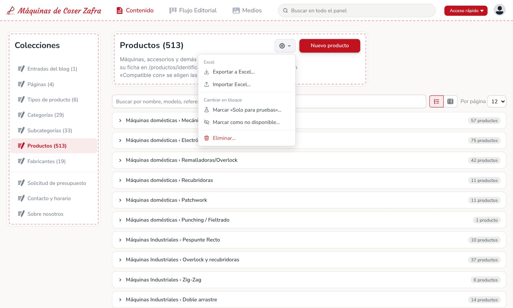
El archivo se descarga en tu ordenador, normalmente en la carpeta «Descargas». La primera hoja del Excel explica cómo está organizado.
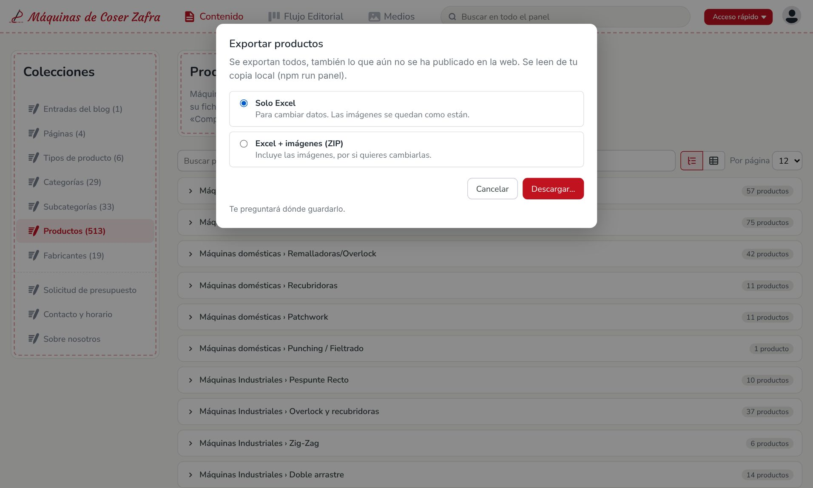
| Qué pasa | Qué hacer |
|---|---|
| He cambiado algo y no se ve en la web. | 1) Mira en Flujo Editorial si está sin publicar: publícalo. 2) Espera 10 minutos. 3) Recarga la web con F5 (en el móvil, desliza hacia abajo). |
| Me he equivocado y aún no lo he publicado. | Eliminar cambios no publicados: vuelve a como estaba. |
| Me he equivocado y ya está publicado. | Corrígelo y vuelve a publicar. Si no sabes cómo estaba, Víctor puede recuperarlo. |
| Un producto no sale en la web. | Comprueba que Estado no está en «No disponible», que «Solo para pruebas» está sin marcar y que está publicado. |
| Sale «CAMBIOS NO GUARDADOS» y quiero salir. | Pulsa Guardar antes; si no, el panel te avisará de que se pierden los cambios. |
| El botón «Publicar» no deja publicar. | Primero hay que poner el estado en Listo. |
| No puedo entrar en el panel. | Comprueba tu usuario y contraseña de GitHub. Si no, avisa a Víctor. |
| Una oferta terminó y sigue en «En oferta» en el panel. | Es normal: la web ya muestra el precio normal. Puedes ponerlo en «Disponible» cuando quieras. |